Extracting and visualizing tidy draws from rstanarm models
Matthew Kay
2023-02-03
Source:vignettes/tidy-rstanarm.Rmd
tidy-rstanarm.RmdIntroduction
This vignette describes how to use the tidybayes and
ggdist packages to extract and visualize tidy data frames of
draws from posterior distributions of model variables, means, and
predictions from rstanarm. For a more general introduction
to tidybayes and its use on general-purpose Bayesian
modeling languages (like Stan and JAGS), see
vignette("tidybayes").
Setup
The following libraries are required to run this vignette:
library(magrittr)
library(dplyr)
library(purrr)
library(forcats)
library(tidyr)
library(modelr)
library(ggdist)
library(tidybayes)
library(ggplot2)
library(cowplot)
library(rstan)
library(rstanarm)
library(RColorBrewer)
theme_set(theme_tidybayes() + panel_border())These options help Stan run faster:
rstan_options(auto_write = TRUE)
options(mc.cores = parallel::detectCores())Example dataset
To demonstrate tidybayes, we will use a simple dataset
with 10 observations from 5 conditions each:
set.seed(5)
n = 10
n_condition = 5
ABC =
tibble(
condition = rep(c("A","B","C","D","E"), n),
response = rnorm(n * 5, c(0,1,2,1,-1), 0.5)
)A snapshot of the data looks like this:
head(ABC, 10)## # A tibble: 10 × 2
## condition response
## <chr> <dbl>
## 1 A -0.420
## 2 B 1.69
## 3 C 1.37
## 4 D 1.04
## 5 E -0.144
## 6 A -0.301
## 7 B 0.764
## 8 C 1.68
## 9 D 0.857
## 10 E -0.931This is a typical tidy format data frame: one observation per row. Graphically:
ABC %>%
ggplot(aes(y = condition, x = response)) +
geom_point()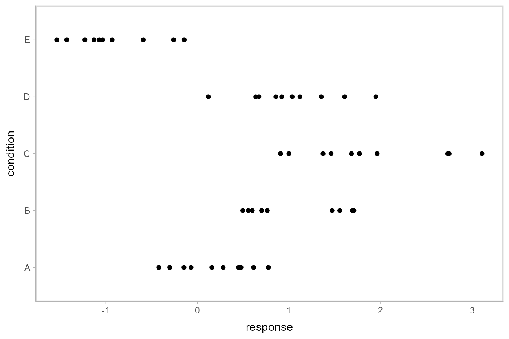
Model
Let’s fit a hierarchical model with shrinkage towards a global mean:
m = stan_lmer(response ~ (1|condition), data = ABC,
prior = normal(0, 1, autoscale = FALSE),
prior_aux = student_t(3, 0, 1, autoscale = FALSE),
adapt_delta = .99)The results look like this:
m## stan_lmer
## family: gaussian [identity]
## formula: response ~ (1 | condition)
## observations: 50
## ------
## Median MAD_SD
## (Intercept) 0.6 0.5
##
## Auxiliary parameter(s):
## Median MAD_SD
## sigma 0.6 0.1
##
## Error terms:
## Groups Name Std.Dev.
## condition (Intercept) 1.13
## Residual 0.56
## Num. levels: condition 5
##
## ------
## * For help interpreting the printed output see ?print.stanreg
## * For info on the priors used see ?prior_summary.stanregExtracting draws from a fit in tidy-format using
spread_draws
Now that we have our results, the fun begins: getting the draws out
in a tidy format! First, we’ll use the get_variables()
function to get a list of raw model variables names so that we know what
variables we can extract from the model:
## [1] "(Intercept)" "b[(Intercept) condition:A]"
## [3] "b[(Intercept) condition:B]" "b[(Intercept) condition:C]"
## [5] "b[(Intercept) condition:D]" "b[(Intercept) condition:E]"
## [7] "sigma" "Sigma[condition:(Intercept),(Intercept)]"
## [9] "accept_stat__" "stepsize__"
## [11] "treedepth__" "n_leapfrog__"
## [13] "divergent__" "energy__"Here, (Intercept) is the global mean, and the
b parameters are offsets from that mean for each condition.
Given these parameters:
b[(Intercept) condition:A]b[(Intercept) condition:B]b[(Intercept) condition:C]b[(Intercept) condition:D]b[(Intercept) condition:E]
We might want a data frame where each row is a draw from either
b[(Intercept) condition:A],
b[(Intercept) condition:B], ...:C],
...:D], or ...:E], and where we have columns
indexing which chain/iteration/draw the row came from and which
condition (A to E) it is for. That would allow
us to easily compute quantities grouped by condition, or generate plots
by condition using ggplot, or even merge draws with the original data to
plot data and posteriors.
The workhorse of tidybayes is the
spread_draws() function, which does this extraction for us.
It includes a simple specification format that we can use to extract
model variables and their indices into tidy-format data frames.
Gathering variable indices into a separate column in a tidy format data frame
Given a parameter like this:
b[(Intercept) condition:D]
We can provide spread_draws() with a column
specification like this:
b[term,group]
Where term corresponds to (Intercept) and
group to condition:D. There is nothing too
magical about what spread_draws() does with this
specification: under the hood, it splits the parameter indices by commas
and spaces (you can split by other characters by changing the
sep argument). It lets you assign columns to the resulting
indices in order. So b[(Intercept) condition:D] has indices
(Intercept) and condition:D, and
spread_draws() lets us extract these indices as columns in
the resulting tidy data frame of draws from b:
m %>%
spread_draws(b[term,group]) %>%
head(10)## # A tibble: 10 × 6
## # Groups: term, group [1]
## term group b .chain .iteration .draw
## <chr> <chr> <dbl> <int> <int> <int>
## 1 (Intercept) condition:A -1.27 1 1 1
## 2 (Intercept) condition:A -0.213 1 2 2
## 3 (Intercept) condition:A 0.0192 1 3 3
## 4 (Intercept) condition:A -0.423 1 4 4
## 5 (Intercept) condition:A -0.401 1 5 5
## 6 (Intercept) condition:A 0.0275 1 6 6
## 7 (Intercept) condition:A -0.318 1 7 7
## 8 (Intercept) condition:A -0.415 1 8 8
## 9 (Intercept) condition:A -0.564 1 9 9
## 10 (Intercept) condition:A -1.15 1 10 10We can choose whatever names we want for the index columns; e.g.:
m %>%
spread_draws(b[t,g]) %>%
head(10)## # A tibble: 10 × 6
## # Groups: t, g [1]
## t g b .chain .iteration .draw
## <chr> <chr> <dbl> <int> <int> <int>
## 1 (Intercept) condition:A -1.27 1 1 1
## 2 (Intercept) condition:A -0.213 1 2 2
## 3 (Intercept) condition:A 0.0192 1 3 3
## 4 (Intercept) condition:A -0.423 1 4 4
## 5 (Intercept) condition:A -0.401 1 5 5
## 6 (Intercept) condition:A 0.0275 1 6 6
## 7 (Intercept) condition:A -0.318 1 7 7
## 8 (Intercept) condition:A -0.415 1 8 8
## 9 (Intercept) condition:A -0.564 1 9 9
## 10 (Intercept) condition:A -1.15 1 10 10But the more descriptive and less cryptic names from the previous example are probably preferable.
In this particular model, there is only one term
((Intercept)), thus we could omit that index altogether to
just get each group and the value of b for the
corresponding condition:
m %>%
spread_draws(b[,group]) %>%
head(10)## # A tibble: 10 × 5
## # Groups: group [1]
## group b .chain .iteration .draw
## <chr> <dbl> <int> <int> <int>
## 1 condition:A -1.27 1 1 1
## 2 condition:A -0.213 1 2 2
## 3 condition:A 0.0192 1 3 3
## 4 condition:A -0.423 1 4 4
## 5 condition:A -0.401 1 5 5
## 6 condition:A 0.0275 1 6 6
## 7 condition:A -0.318 1 7 7
## 8 condition:A -0.415 1 8 8
## 9 condition:A -0.564 1 9 9
## 10 condition:A -1.15 1 10 10Since all the groups in this case are from the condition
factor, we may also want to separate out a column just containing the
corresponding condition (A, B, C,
etc). We can do that using tidyr::separate:
## # A tibble: 10 × 6
## group condition b .chain .iteration .draw
## <chr> <chr> <dbl> <int> <int> <int>
## 1 condition A -1.27 1 1 1
## 2 condition A -0.213 1 2 2
## 3 condition A 0.0192 1 3 3
## 4 condition A -0.423 1 4 4
## 5 condition A -0.401 1 5 5
## 6 condition A 0.0275 1 6 6
## 7 condition A -0.318 1 7 7
## 8 condition A -0.415 1 8 8
## 9 condition A -0.564 1 9 9
## 10 condition A -1.15 1 10 10Alternatively, we could change the sep argument to
spread_draws() to also split on :
(sep is a regular expression). Note: This
works in this example, but will not work well on rstanarm models where
interactions between factors are used as grouping levels in a multilevel
model, thus : is not included in the default
separators.
m %>%
spread_draws(b[,group,condition], sep = "[, :]") %>%
head(10)## # A tibble: 10 × 6
## # Groups: group, condition [1]
## group condition b .chain .iteration .draw
## <chr> <chr> <dbl> <int> <int> <int>
## 1 condition A -1.27 1 1 1
## 2 condition A -0.213 1 2 2
## 3 condition A 0.0192 1 3 3
## 4 condition A -0.423 1 4 4
## 5 condition A -0.401 1 5 5
## 6 condition A 0.0275 1 6 6
## 7 condition A -0.318 1 7 7
## 8 condition A -0.415 1 8 8
## 9 condition A -0.564 1 9 9
## 10 condition A -1.15 1 10 10Note: If you have used spread_draws()
with a raw sample from Stan or JAGS, you may be used to using
recover_types() before spread_draws() to get
index column values back (e.g. if the index was a factor). This is not
necessary when using spread_draws() on
rstanarm models, because those models already contain that
information in their variable names. For more on
recover_types(), see
vignette("tidybayes").
Point summaries and intervals
With simple model variables
tidybayes provides a family of functions for generating
point summaries and intervals from draws in a tidy format. These
functions follow the naming scheme
[median|mean|mode]_[qi|hdi], for example,
median_qi(), mean_qi(),
mode_hdi(), and so on. The first name (before the
_) indicates the type of point summary, and the second name
indicates the type of interval. qi yields a quantile
interval (a.k.a. equi-tailed interval, central interval, or percentile
interval) and hdi yields a highest (posterior) density
interval. Custom point or interval functions can also be applied using
the point_interval() function.
For example, we might extract the draws corresponding to the posterior distributions of the overall mean and standard deviation of observations:
m %>%
spread_draws(`(Intercept)`, sigma) %>%
head(10)## # A tibble: 10 × 5
## .chain .iteration .draw `(Intercept)` sigma
## <int> <int> <int> <dbl> <dbl>
## 1 1 1 1 1.47 0.749
## 2 1 2 2 0.295 0.508
## 3 1 3 3 0.330 0.564
## 4 1 4 4 0.587 0.564
## 5 1 5 5 0.522 0.533
## 6 1 6 6 0.604 0.544
## 7 1 7 7 0.336 0.623
## 8 1 8 8 0.582 0.559
## 9 1 9 9 1.07 0.660
## 10 1 10 10 1.19 0.506Like with b[term,group], this gives us a tidy data
frame. If we want the median and 95% quantile interval of the variables,
we can apply median_qi():
m %>%
spread_draws(`(Intercept)`, sigma) %>%
median_qi(`(Intercept)`, sigma)## # A tibble: 1 × 9
## `(Intercept)` `(Intercept).lower` `(Intercept).upper` sigma sigma.lower sigma.upper .width .point .interval
## <dbl> <dbl> <dbl> <dbl> <dbl> <dbl> <dbl> <chr> <chr>
## 1 0.609 -0.486 1.58 0.561 0.457 0.698 0.95 median qiWe can specify the columns we want to get medians and intervals from,
as above, or if we omit the list of columns, median_qi()
will use every column that is not a grouping column or a special column
(like .chain, .iteration, or
.draw). Thus in the above example, (Intercept)
and sigma are redundant arguments to
median_qi() because they are also the only columns we
gathered from the model. So we can simplify this to:
m %>%
spread_draws(`(Intercept)`, sigma) %>%
median_qi()## # A tibble: 1 × 9
## `(Intercept)` `(Intercept).lower` `(Intercept).upper` sigma sigma.lower sigma.upper .width .point .interval
## <dbl> <dbl> <dbl> <dbl> <dbl> <dbl> <dbl> <chr> <chr>
## 1 0.609 -0.486 1.58 0.561 0.457 0.698 0.95 median qiIf you would rather have a long-format list of intervals, use
gather_draws() instead:
m %>%
gather_draws(`(Intercept)`, sigma) %>%
median_qi()## # A tibble: 2 × 7
## .variable .value .lower .upper .width .point .interval
## <chr> <dbl> <dbl> <dbl> <dbl> <chr> <chr>
## 1 (Intercept) 0.609 -0.486 1.58 0.95 median qi
## 2 sigma 0.561 0.457 0.698 0.95 median qiFor more on gather_draws(), see
vignette("tidybayes").
With indexed variables
When we have a model variable with one or more indices, such as
b, we can apply median_qi() (or other
functions in the point_interval() family) as we did
before:
m %>%
spread_draws(b[,group]) %>%
median_qi()## # A tibble: 5 × 7
## group b .lower .upper .width .point .interval
## <chr> <dbl> <dbl> <dbl> <dbl> <chr> <chr>
## 1 condition:A -0.410 -1.42 0.663 0.95 median qi
## 2 condition:B 0.385 -0.638 1.45 0.95 median qi
## 3 condition:C 1.20 0.244 2.31 0.95 median qi
## 4 condition:D 0.401 -0.593 1.49 0.95 median qi
## 5 condition:E -1.48 -2.52 -0.413 0.95 median qiHow did median_qi() know what to aggregate? Data frames
returned by spread_draws() are automatically grouped by all
index variables you pass to it; in this case, that means
spread_draws() groups its results by group.
median_qi() respects those groups, and calculates the point
summaries and intervals within all groups. Then, because no columns were
passed to median_qi(), it acts on the only non-special
(.-prefixed) and non-group column, b. So the
above shortened syntax is equivalent to this more verbose call:
m %>%
spread_draws(b[,group]) %>%
group_by(group) %>% # this line not necessary (done by spread_draws)
median_qi(b) # b is not necessary (it is the only non-group column)## # A tibble: 5 × 7
## group b .lower .upper .width .point .interval
## <chr> <dbl> <dbl> <dbl> <dbl> <chr> <chr>
## 1 condition:A -0.410 -1.42 0.663 0.95 median qi
## 2 condition:B 0.385 -0.638 1.45 0.95 median qi
## 3 condition:C 1.20 0.244 2.31 0.95 median qi
## 4 condition:D 0.401 -0.593 1.49 0.95 median qi
## 5 condition:E -1.48 -2.52 -0.413 0.95 median qitidybayes also provides an implementation of
posterior::summarise_draws() for grouped data frames
(tidybayes::summaries_draws.grouped_df()), which you can
use to quickly get convergence diagnostics:
m %>%
spread_draws(b[,group]) %>%
summarise_draws()## # A tibble: 5 × 11
## # Groups: group [5]
## group variable mean median sd mad q5 q95 rhat ess_bulk ess_tail
## <chr> <chr> <num> <num> <num> <num> <num> <num> <num> <num> <num>
## 1 condition:A b -0.416 -0.410 0.513 0.476 -1.23 0.408 1.00 1014. 1168.
## 2 condition:B b 0.387 0.385 0.516 0.471 -0.427 1.22 1.00 1024. 1350.
## 3 condition:C b 1.22 1.20 0.513 0.468 0.428 2.06 1.00 1004. 1212.
## 4 condition:D b 0.402 0.401 0.515 0.474 -0.418 1.24 1.00 1032. 1379.
## 5 condition:E b -1.49 -1.48 0.517 0.478 -2.33 -0.667 1.00 1035. 1311.Combining variables with different indices in a single tidy format data frame
spread_draws() and gather_draws() support
extracting variables that have different indices into the same data
frame. Indices with the same name are automatically matched up, and
values are duplicated as necessary to produce one row per all
combination of levels of all indices. For example, we might want to
calculate the mean within each condition (call this
condition_mean). In this model, that mean is the intercept
((Intercept)) plus the effect for a given condition
(b).
We can gather draws from (Intercept) and b
together in a single data frame:
m %>%
spread_draws(`(Intercept)`, b[,group]) %>%
head(10)## # A tibble: 10 × 6
## # Groups: group [5]
## .chain .iteration .draw `(Intercept)` group b
## <int> <int> <int> <dbl> <chr> <dbl>
## 1 1 1 1 1.47 condition:A -1.27
## 2 1 1 1 1.47 condition:B -0.178
## 3 1 1 1 1.47 condition:C 0.437
## 4 1 1 1 1.47 condition:D -0.413
## 5 1 1 1 1.47 condition:E -2.15
## 6 1 2 2 0.295 condition:A -0.213
## 7 1 2 2 0.295 condition:B 0.886
## 8 1 2 2 0.295 condition:C 1.66
## 9 1 2 2 0.295 condition:D 0.713
## 10 1 2 2 0.295 condition:E -1.26Within each draw, (Intercept) is repeated as necessary
to correspond to every index of b. Thus, the
mutate function from dplyr can be used to find their sum,
condition_mean (which is the mean for each condition):
m %>%
spread_draws(`(Intercept)`, b[,group]) %>%
mutate(condition_mean = `(Intercept)` + b) %>%
median_qi(condition_mean)## # A tibble: 5 × 7
## group condition_mean .lower .upper .width .point .interval
## <chr> <dbl> <dbl> <dbl> <dbl> <chr> <chr>
## 1 condition:A 0.199 -0.149 0.532 0.95 median qi
## 2 condition:B 0.995 0.654 1.36 0.95 median qi
## 3 condition:C 1.83 1.48 2.18 0.95 median qi
## 4 condition:D 1.02 0.664 1.37 0.95 median qi
## 5 condition:E -0.881 -1.23 -0.513 0.95 median qimedian_qi() uses tidy evaluation (see
vignette("tidy-evaluation", package = "rlang")), so it can
take column expressions, not just column names. Thus, we can simplify
the above example by moving the calculation of
condition_mean from mutate into
median_qi():
m %>%
spread_draws(`(Intercept)`, b[,group]) %>%
median_qi(condition_mean = `(Intercept)` + b)## # A tibble: 5 × 7
## group condition_mean .lower .upper .width .point .interval
## <chr> <dbl> <dbl> <dbl> <dbl> <chr> <chr>
## 1 condition:A 0.199 -0.149 0.532 0.95 median qi
## 2 condition:B 0.995 0.654 1.36 0.95 median qi
## 3 condition:C 1.83 1.48 2.18 0.95 median qi
## 4 condition:D 1.02 0.664 1.37 0.95 median qi
## 5 condition:E -0.881 -1.23 -0.513 0.95 median qiPlotting intervals with multiple probability levels
median_qi() and its sister functions can produce an
arbitrary number of probability intervals by setting the
.width = argument:
m %>%
spread_draws(`(Intercept)`, b[,group]) %>%
median_qi(condition_mean = `(Intercept)` + b, .width = c(.95, .8, .5))## # A tibble: 15 × 7
## group condition_mean .lower .upper .width .point .interval
## <chr> <dbl> <dbl> <dbl> <dbl> <chr> <chr>
## 1 condition:A 0.199 -0.149 0.532 0.95 median qi
## 2 condition:B 0.995 0.654 1.36 0.95 median qi
## 3 condition:C 1.83 1.48 2.18 0.95 median qi
## 4 condition:D 1.02 0.664 1.37 0.95 median qi
## 5 condition:E -0.881 -1.23 -0.513 0.95 median qi
## 6 condition:A 0.199 -0.0243 0.410 0.8 median qi
## 7 condition:B 0.995 0.769 1.23 0.8 median qi
## 8 condition:C 1.83 1.60 2.06 0.8 median qi
## 9 condition:D 1.02 0.781 1.24 0.8 median qi
## 10 condition:E -0.881 -1.11 -0.651 0.8 median qi
## 11 condition:A 0.199 0.0816 0.308 0.5 median qi
## 12 condition:B 0.995 0.875 1.12 0.5 median qi
## 13 condition:C 1.83 1.71 1.95 0.5 median qi
## 14 condition:D 1.02 0.892 1.13 0.5 median qi
## 15 condition:E -0.881 -1.00 -0.758 0.5 median qiThe results are in a tidy format: one row per group and uncertainty
interval width (.width). This facilitates plotting. For
example, assigning -.width to the linewidth
aesthetic will show all intervals, making thicker lines correspond to
smaller intervals. The ggdist::geom_pointinterval() geom
automatically sets the linewidth aesthetic appropriately
based on the .width columns in the data to produce plots of
points with multiple probability levels:
m %>%
spread_draws(`(Intercept)`, b[,group]) %>%
median_qi(condition_mean = `(Intercept)` + b, .width = c(.95, .66)) %>%
ggplot(aes(y = group, x = condition_mean, xmin = .lower, xmax = .upper)) +
geom_pointinterval()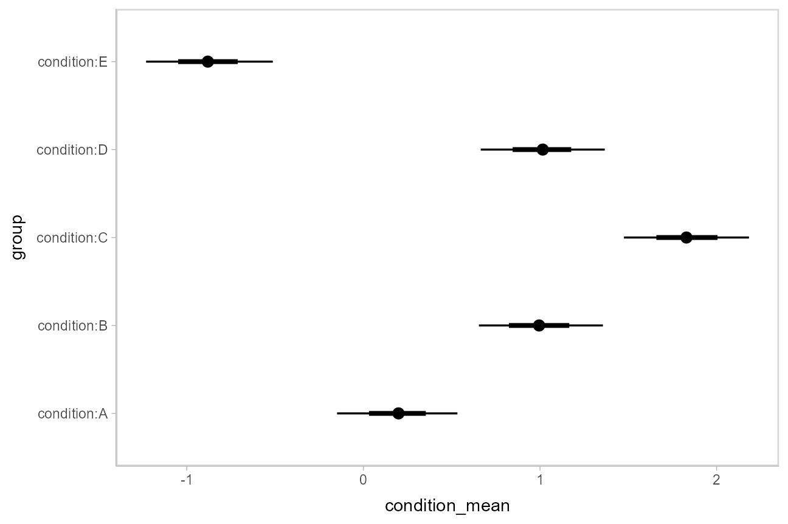
Intervals with densities
To see the density along with the intervals, we can use
ggdist::stat_eye() (“eye plots”, which combine intervals
with violin plots), or ggdist::stat_halfeye() (interval +
density plots):
m %>%
spread_draws(`(Intercept)`, b[,group]) %>%
mutate(condition_mean = `(Intercept)` + b) %>%
ggplot(aes(y = group, x = condition_mean)) +
stat_halfeye()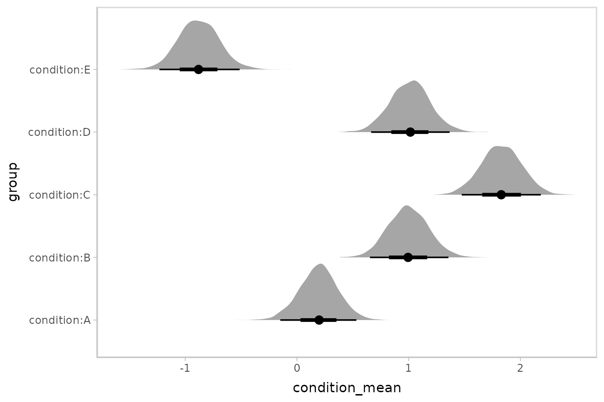
Or say you want to annotate portions of the densities in color; the
fill aesthetic can vary within a slab in all geoms and
stats in the ggdist::geom_slabinterval() family, including
ggdist::stat_halfeye(). For example, if you want to
annotate a domain-specific region of practical equivalence (ROPE), you
could do something like this:
m %>%
spread_draws(`(Intercept)`, b[,group]) %>%
mutate(condition_mean = `(Intercept)` + b) %>%
ggplot(aes(y = group, x = condition_mean, fill = after_stat(abs(x) < .8))) +
stat_halfeye() +
geom_vline(xintercept = c(-.8, .8), linetype = "dashed") +
scale_fill_manual(values = c("gray80", "skyblue"))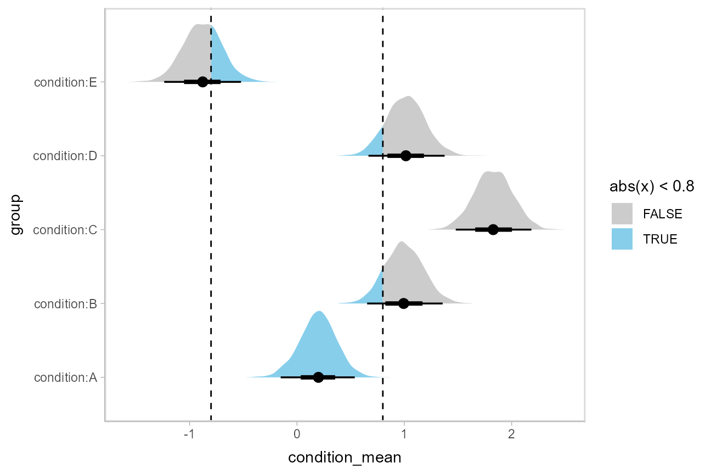
Other visualizations of distributions:
stat_slabinterval
There are a variety of additional stats for visualizing distributions
in the ggdist::geom_slabinterval() family of stats and
geoms:

See vignette("slabinterval", package = "ggdist") for an
overview.
Posterior means and predictions
Rather than calculating conditional means manually as in the previous
example, we could use add_epred_draws(), which is analogous
to rstanarm::posterior_epred() (giving posterior draws from
the expectation of the posterior predictive; i.e. posterior
distributions of conditional means), but uses a tidy data format. We can
combine it with modelr::data_grid() to first generate a
grid describing the predictions we want, then transform that grid into a
long-format data frame of draws from conditional means:
## # A tibble: 10 × 6
## # Groups: condition, .row [1]
## condition .row .chain .iteration .draw .epred
## <chr> <int> <int> <int> <int> <dbl>
## 1 A 1 NA NA 1 0.203
## 2 A 1 NA NA 2 0.0815
## 3 A 1 NA NA 3 0.349
## 4 A 1 NA NA 4 0.164
## 5 A 1 NA NA 5 0.121
## 6 A 1 NA NA 6 0.632
## 7 A 1 NA NA 7 0.0172
## 8 A 1 NA NA 8 0.168
## 9 A 1 NA NA 9 0.502
## 10 A 1 NA NA 10 0.0395To plot this example, we’ll also show the use of
ggdist::stat_pointinterval() instead of
ggdist::geom_pointinterval(), which summarizes draws into
point summaries and intervals within ggplot:
ABC %>%
data_grid(condition) %>%
add_epred_draws(m) %>%
ggplot(aes(x = .epred, y = condition)) +
stat_pointinterval(.width = c(.66, .95))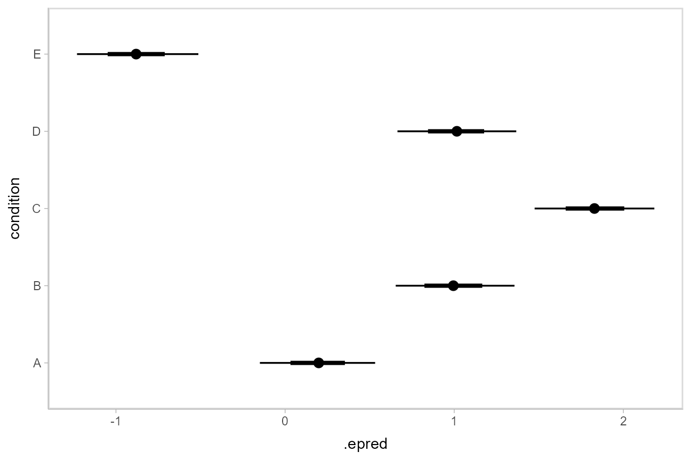
Quantile dotplots
Intervals are nice if the alpha level happens to line up with whatever decision you are trying to make, but getting a shape of the posterior is better (hence eye plots, above). On the other hand, making inferences from density plots is imprecise (estimating the area of one shape as a proportion of another is a hard perceptual task). Reasoning about probability in frequency formats is easier, motivating quantile dotplots (Kay et al. 2016, Fernandes et al. 2018), which also allow precise estimation of arbitrary intervals (down to the dot resolution of the plot, 100 in the example below).
Within the slabinterval family of geoms in tidybayes is the
dots and dotsinterval family, which
automatically determine appropriate bin sizes for dotplots and can
calculate quantiles from samples to construct quantile dotplots.
ggdist::stat_dotsinterval() is the horizontal variant
designed for use on samples:
ABC %>%
data_grid(condition) %>%
add_epred_draws(m) %>%
ggplot(aes(x = .epred, y = condition)) +
stat_dotsinterval(quantiles = 100)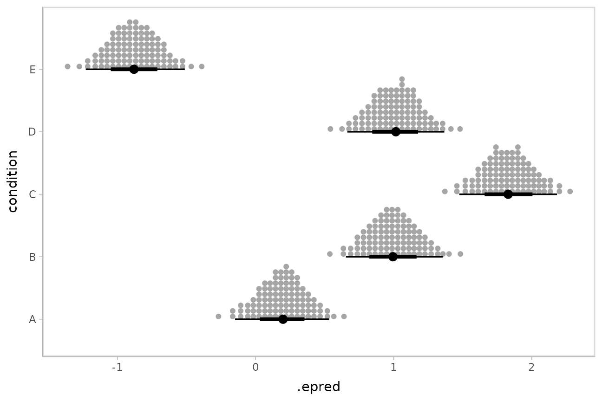
The idea is to get away from thinking about the posterior as indicating one canonical point or interval, but instead to represent it as (say) 100 approximately equally likely points.
Posterior predictions
Where add_epred_draws() is analogous to
rstanarm::posterior_epred(),
add_predicted_draws() is analogous to
rstanarm::posterior_predict(), giving draws from the
posterior predictive distribution.
We could use tidybayes::stat_interval() to plot
predictive bands alongside the data and posterior distributions of the
means:
grid = ABC %>%
data_grid(condition)
means = grid %>%
add_epred_draws(m)
preds = grid %>%
add_predicted_draws(m)
ABC %>%
ggplot(aes(y = condition, x = response)) +
stat_interval(aes(x = .prediction), data = preds) +
stat_pointinterval(aes(x = .epred), data = means, .width = c(.66, .95), position = position_nudge(y = -0.3)) +
geom_point() +
scale_color_brewer()
Fit/prediction curves
To demonstrate drawing fit curves with uncertainty, let’s fit a
slightly naive model to part of the mtcars dataset:
m_mpg = stan_glm(mpg ~ hp * cyl, data = mtcars)We can plot fit curves with probability bands:
mtcars %>%
group_by(cyl) %>%
data_grid(hp = seq_range(hp, n = 51)) %>%
add_epred_draws(m_mpg) %>%
ggplot(aes(x = hp, y = mpg, color = ordered(cyl))) +
stat_lineribbon(aes(y = .epred)) +
geom_point(data = mtcars) +
scale_fill_brewer(palette = "Greys") +
scale_color_brewer(palette = "Set2")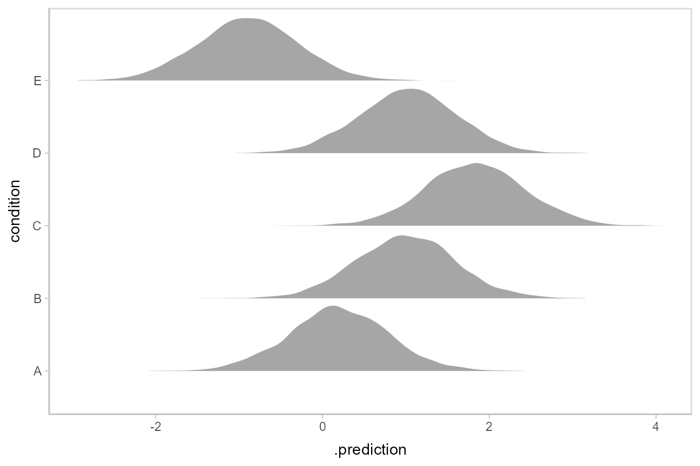
Or we can sample a reasonable number of fit lines (say 100) and overplot them:
mtcars %>%
group_by(cyl) %>%
data_grid(hp = seq_range(hp, n = 101)) %>%
# NOTE: this shows the use of ndraws to subsample within add_epred_draws()
# ONLY do this IF you are planning to make spaghetti plots, etc.
# NEVER subsample to a small sample to plot intervals, densities, etc.
add_epred_draws(m_mpg, ndraws = 100) %>%
ggplot(aes(x = hp, y = mpg, color = ordered(cyl))) +
geom_line(aes(y = .epred, group = paste(cyl, .draw)), alpha = .1) +
geom_point(data = mtcars) +
scale_color_brewer(palette = "Dark2")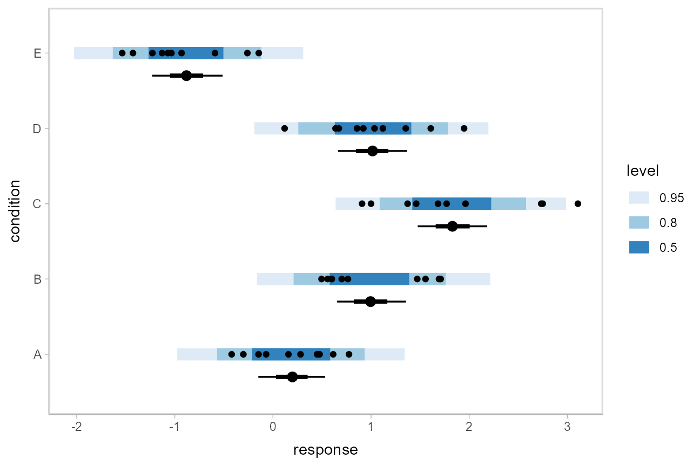
Or we could plot posterior predictions (instead of means). For this
example we’ll also use alpha to make it easier to see
overlapping bands:
mtcars %>%
group_by(cyl) %>%
data_grid(hp = seq_range(hp, n = 101)) %>%
add_predicted_draws(m_mpg) %>%
ggplot(aes(x = hp, y = mpg, color = ordered(cyl), fill = ordered(cyl))) +
stat_lineribbon(aes(y = .prediction), .width = c(.95, .80, .50), alpha = 1/4) +
geom_point(data = mtcars) +
scale_fill_brewer(palette = "Set2") +
scale_color_brewer(palette = "Dark2")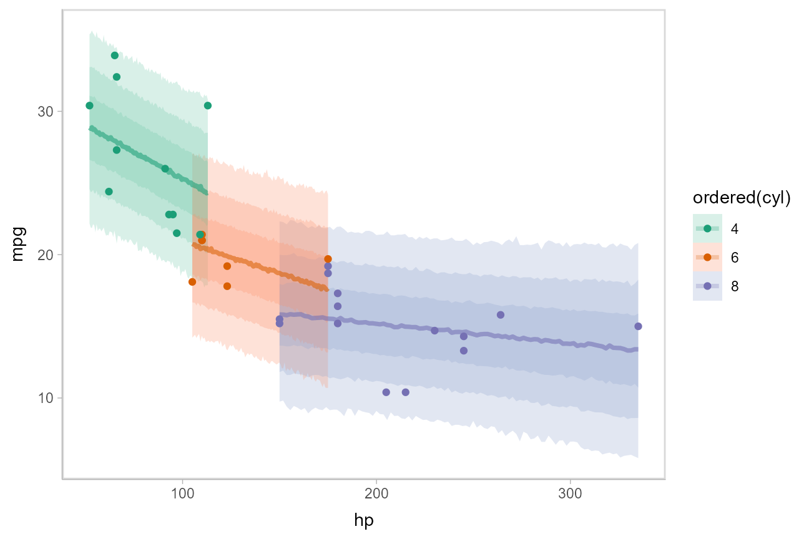
See vignette("tidy-brms") for additional examples of fit
lines, including animated hypothetical
outcome plots (HOPs).
Comparing levels of a factor
If we wish compare the means from each condition,
compare_levels() facilitates comparisons of the value of
some variable across levels of a factor. By default it computes all
pairwise differences.
Let’s demonstrate compare_levels() with
ggdist::stat_halfeye(). We’ll also re-order by the mean of
the difference:
m %>%
spread_draws(b[,,condition], sep = "[, :]") %>%
compare_levels(b, by = condition) %>%
ungroup() %>%
mutate(condition = reorder(condition, b)) %>%
ggplot(aes(y = condition, x = b)) +
stat_halfeye() +
geom_vline(xintercept = 0, linetype = "dashed") 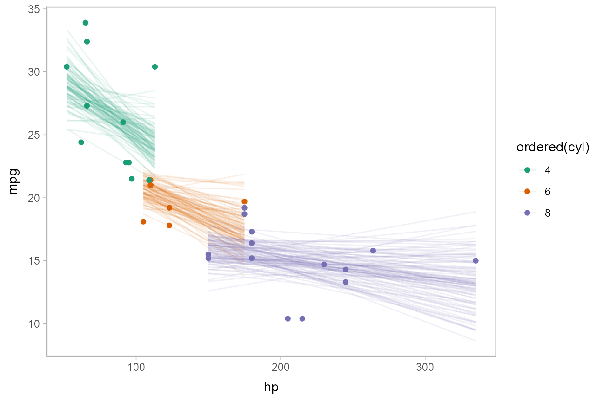
Ordinal models
Ordinal model with categorical predictor
Here’s an ordinal model with a categorical predictor:
data(esoph)
m_esoph_rs = stan_polr(tobgp ~ agegp, data = esoph, prior = R2(0.25), prior_counts = rstanarm::dirichlet(1))The rstanarm::posterior_linpred() function for ordinal
regression models in rstanarm returns the link-level prediction for each
draw (in contrast to brms::posterior_epred(), which returns
one prediction per category for ordinal models, see the ordinal
regression examples in vignette("tidy-brms")).
Unfortunately, rstanarm::posterior_epred() does not provide
this format. The philosophy of tidybayes is to tidy
whatever format is output by a model, so in keeping with that
philosophy, when applied to ordinal rstanarm models, we
will use examples with add_linpred_draws() and show how to
transform them into predicted per-category probabilities.
For example, here is a plot of the link-level fit:
esoph %>%
data_grid(agegp) %>%
add_linpred_draws(m_esoph_rs) %>%
ggplot(aes(x = as.numeric(agegp), y = .linpred)) +
stat_lineribbon() +
scale_fill_brewer(palette = "Greys")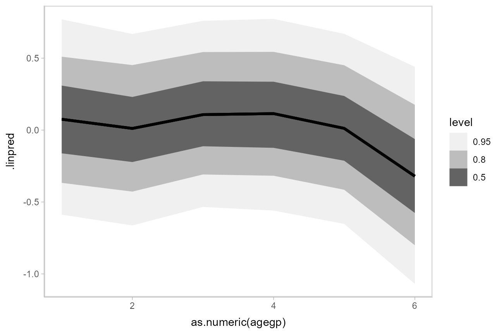
This can be hard to interpret. To turn this into predicted probabilities on a per-category basis, we have to use the fact that an ordinal logistic regression defines the probability of an outcome in category \(j\) or less as:
\[ \textrm{logit}\left[Pr(Y\le j)\right] = \alpha_j - \beta x \]
Thus, the probability of category \(j\) is:
\[ \begin{align} Pr(Y = j) &= Pr(Y \le j) - Pr(Y \le j - 1)\\ &= \textrm{logit}^{-1}(\alpha_j - \beta x) - \textrm{logit}^{-1}(\alpha_{j-1} - \beta x) \end{align} \]
To derive these values, we need two things:
The \(\alpha_j\) values. These are threshold parameters fitted by the model. For convenience, if there are \(k\) levels, we will take \(\alpha_k = +\infty\), since the probability of being in the top level or below it is 1.
The \(\beta x\) values. These are just the
.linpredvalues returned byadd_linpred_draws().
The thresholds in rstanarm are coefficients with names
containing |, indicating which categories they are
thresholds between. We can see those parameters in the list of variables
in the model:
get_variables(m_esoph_rs)## [1] "agegp.L" "agegp.Q" "agegp.C" "agegp^4" "agegp^5" "0-9g/day|10-19"
## [7] "10-19|20-29" "20-29|30+" "accept_stat__" "stepsize__" "treedepth__" "n_leapfrog__"
## [13] "divergent__" "energy__"We can extract those automatically by using the
regex = TRUE argument to gather_draws() to
find all variables containing a | character. We will then
use dplyr::summarise_all(list) to turn these thresholds
into a list column, and add a final threshold equal to \(+\infty\) (to represent the highest
category):
thresholds = m_esoph_rs %>%
gather_draws(`.*[|].*`, regex = TRUE) %>%
group_by(.draw) %>%
select(.draw, threshold = .value) %>%
summarise_all(list) %>%
mutate(threshold = map(threshold, ~ c(., Inf)))
head(thresholds, 10)## # A tibble: 10 × 2
## .draw threshold
## <int> <list>
## 1 1 <dbl [4]>
## 2 2 <dbl [4]>
## 3 3 <dbl [4]>
## 4 4 <dbl [4]>
## 5 5 <dbl [4]>
## 6 6 <dbl [4]>
## 7 7 <dbl [4]>
## 8 8 <dbl [4]>
## 9 9 <dbl [4]>
## 10 10 <dbl [4]>For example, the threshold vector from one row of this data frame (i.e., from one draw from the posterior) looks like this:
thresholds[1,]$threshold## [[1]]
## [1] -0.8200002 0.6020005 1.4201284 InfWe can combine those thresholds (the \(\alpha_j\) values from the above formula)
with the .linpred column from
add_linpred_draws() (\(\beta
x\) from the above formula) to calculate per-category
probabilities:
esoph %>%
data_grid(agegp) %>%
add_linpred_draws(m_esoph_rs) %>%
inner_join(thresholds, by = ".draw", multiple = "all") %>%
mutate(`P(Y = category)` = map2(threshold, .linpred, function(alpha, beta_x)
# this part is logit^-1(alpha_j - beta*x) - logit^-1(alpha_j-1 - beta*x)
plogis(alpha - beta_x) -
plogis(lag(alpha, default = -Inf) - beta_x)
)) %>%
mutate(.category = list(levels(esoph$tobgp))) %>%
unnest(c(threshold, `P(Y = category)`, .category)) %>%
ggplot(aes(x = agegp, y = `P(Y = category)`, color = .category)) +
stat_pointinterval(position = position_dodge(width = .4)) +
scale_size_continuous(guide = "none") +
scale_color_manual(values = brewer.pal(6, "Blues")[-c(1,2)]) 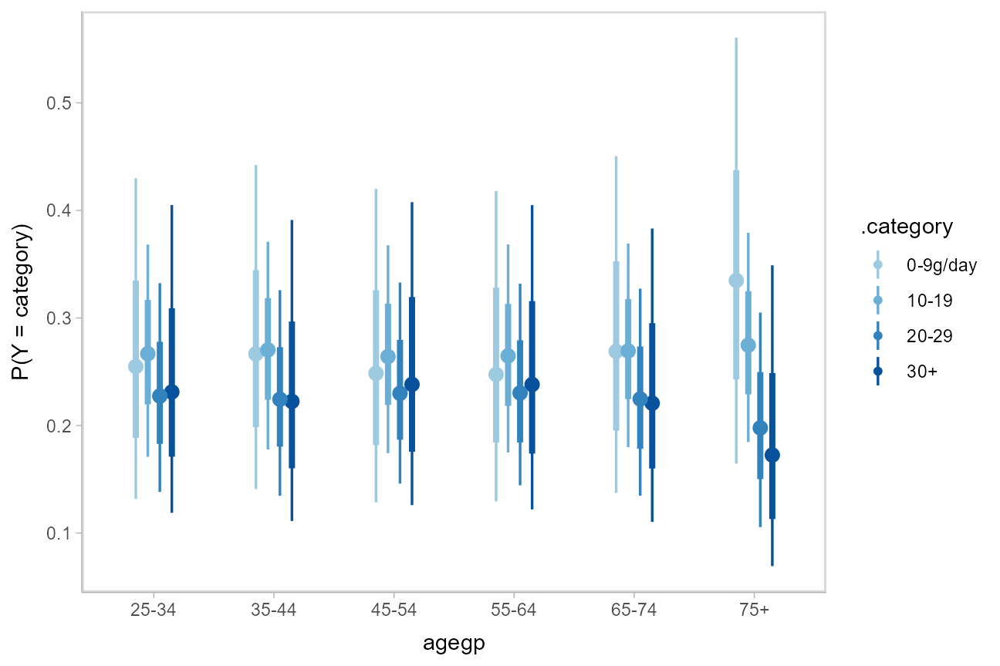
It is hard to see the changes in categories in the above plot; let’s try something that gives a better gist of the distribution within each year:
esoph_plot = esoph %>%
data_grid(agegp) %>%
add_linpred_draws(m_esoph_rs) %>%
inner_join(thresholds, by = ".draw", multiple = "all") %>%
mutate(`P(Y = category)` = map2(threshold, .linpred, function(alpha, beta_x)
# this part is logit^-1(alpha_j - beta*x) - logit^-1(alpha_j-1 - beta*x)
plogis(alpha - beta_x) -
plogis(lag(alpha, default = -Inf) - beta_x)
)) %>%
mutate(.category = list(levels(esoph$tobgp))) %>%
unnest(c(threshold, `P(Y = category)`, .category)) %>%
ggplot(aes(x = `P(Y = category)`, y = .category)) +
coord_cartesian(expand = FALSE) +
facet_grid(. ~ agegp, switch = "x") +
theme_classic() +
theme(strip.background = element_blank(), strip.placement = "outside") +
ggtitle("P(tobacco consumption category | age group)") +
xlab("age group")
esoph_plot +
stat_summary(fun = median, geom = "bar", fill = "gray65", width = 1, color = "white") +
stat_pointinterval()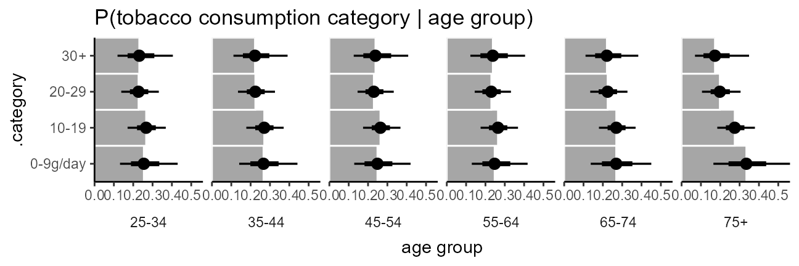
The bars in this case might present a false sense of precision, so we could also try CCDF barplots instead:
esoph_plot +
stat_ccdfinterval() +
expand_limits(x = 0) #ensure bars go to 0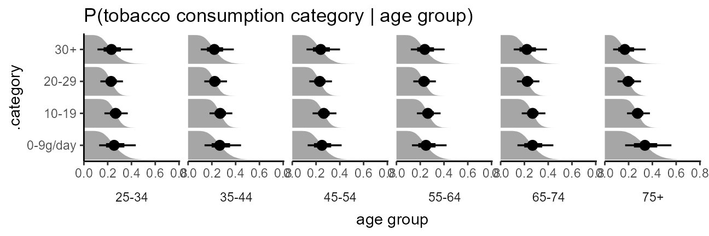
This output should be very similar to the output from the
corresponding m_esoph_brm model in
vignette("tidy-brms") (modulo different priors), though it
takes a bit more work to produce in rstanarm compared to
brms.